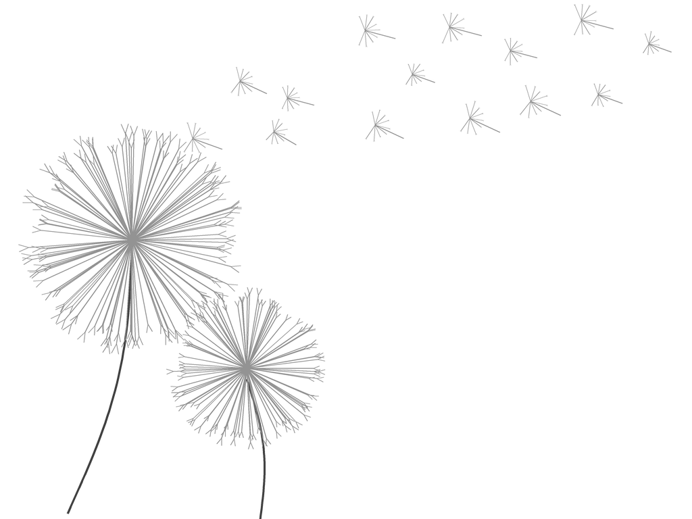

Bilgilerinizi bırakın, en kısa sürede size dönüş yapalım.
Talebiniz alındı! En kısa sürede size dönüş yapacağız.

P E L İ N S UP O L A T
K L İ N İ K P S İ K O L O G
Uzmanlık Alanları
HİZMETLER
Travma ve Zorlayıcı Yaşam Deneyimleri
Travma; kişinin bedensel ya da ruhsal bütünlüğünü tehdit eden yaşantıların ardından ortaya çıkan psikolojik etkiler bütünüdür…
Travma; kişinin bedensel ya da ruhsal bütünlüğünü tehdit eden yaşantıların ardından ortaya çıkan psikolojik etkiler bütünüdür. İstismar, ihmal, şiddet, savaş, doğal afetler veya ani kayıplar; kişinin kendisiyle, bedeniyle, ilişkileriyle ve dünyayla kurduğu bağı etkileyebilir. Bu etkiler kaygı, sürekli tetikte olma, uyku sorunları, kaçınma davranışları, bedensel gerginlik veya ilişkilerde güven kurmakta zorlanma şeklinde görülebilir.
Terapi sürecinde yaşanan deneyimin kişi üzerindeki etkileri birlikte anlamlandırılır. Süreç, kişinin ruhsal hazır oluşuna ve kendi ritmine göre ilerler. Kişi hazır oldukça travmatik yaşantısını sözelleştirmesi, yaşadıklarının bugünkü yaşamına etkilerini fark etmesi ve bu deneyimin oluşturduğu düşünce kalıpları üzerinde çalışması için desteklenir.
Kaygı, Stres ve Fobiler
Kaygı ve stres; sürekli endişe, bedensel gerginlik, çarpıntı, uyku sorunları, kontrol etme ihtiyacı veya kaçınma davranışlarıyla kendini gösterebilir…
Kaygı ve stres; sürekli endişe, bedensel gerginlik, çarpıntı, uyku sorunları, kontrol etme ihtiyacı veya kaçınma davranışlarıyla kendini gösterebilir. Bazı durumlarda bu belirtiler belirli nesne ya da durumlara yönelik fobilere dönüşebilir.
Psikolojik destek, kaygıyı sürdüren düşünce ve davranış örüntülerini anlamaya, belirtilerle daha sağlıklı baş etmeye ve günlük yaşam kalitesini artırmaya yardımcı olur.
Yas ve Kayıp Süreçleri
Yas, kişinin hayatında anlam taşıyan bir kaybın ardından yaşadığı doğal ama derin bir uyum sürecidir…
Yas, kişinin hayatında anlam taşıyan bir kaybın ardından yaşadığı doğal ama derin bir uyum sürecidir. Bu kayıp bir yakının ölümü olabileceği gibi; bir ilişkinin bitişi, sağlık kaybı, yaşam düzeninin değişmesi ya da kişinin geleceğe dair kurduğu beklentilerin sarsılmasıyla da ilişkili olabilir.
Yas sürecinde üzüntü, öfke, boşluk hissi, suçluluk, kabullenmekte zorlanma, hayata devam etmekte güçlük ya da duygusal dalgalanmalar görülebilir. Psikolojik destek, kişinin kaybını kendi ritminde anlamlandırmasına ve bu kayıpla birlikte yaşamını yeniden kurmasına yardımcı olur.
Yaşlılık ve Bilişsel Değerlendirme
Yaşlılık döneminde hafıza, dikkat, yönelim ve günlük işlevlerde yaşanan değişimler hem kişi hem de yakınları için kaygı verici olabilir…
Yaşlılık döneminde hafıza, dikkat, yönelim ve günlük işlevlerde yaşanan değişimler hem kişi hem de yakınları için kaygı verici olabilir. Bağımsızlığın azalması, yalnızlık, kayıplar ve yaşam düzenindeki değişiklikler de kişinin ruhsal durumunu etkileyebilir. Bu süreçte yaşlı bireylere, karşılaştıkları değişimleri anlamlandırmaları ve bu döneme daha sağlıklı uyum sağlamaları için psikolojik destek sunulur.
Nöropsikolojik değerlendirmede bellek, dikkat, dil, yönelim ve yürütücü işlevler bilimsel testlerle incelenir. Bu değerlendirme, unutkanlık şikâyetlerinin anlaşılmasına ve Alzheimer, Lewy cisimcikli demans gibi nörobilişsel tabloların erken fark edilmesine katkı sağlar. Tıbbi tanının yerine geçmez; gerektiğinde nöroloji, geriatri veya psikiyatri değerlendirmesine yönlendirme yapılır.
Yaşlı Yakınlarına Destek
Bir yakının hafıza veya davranışlarındaki değişimlere tanıklık etmek bakım verenler için duygusal açıdan zorlayıcı olabilir. Psikolojik destek; aile üyelerinin yaşadıkları süreci anlamlandırmalarına…
Bir yakının hafıza veya davranışlarındaki değişimlere tanıklık etmek bakım verenler için duygusal açıdan zorlayıcı olabilir.
Psikolojik destek; aile üyelerinin yaşadıkları süreci anlamlandırmalarına, tükenmişliği önlemelerine ve yakınlarına daha sağlıklı şekilde eşlik edebilmelerine yardımcı olur.
Kültürlerarası Psikolojik Destek
Farklı bir ülkede yaşamak, yeni bir kültüre uyum sağlamak veya iki kültür arasında büyümek; yalnızlık, kaygı, aidiyet güçlüğü ve kimlik karmaşası gibi zorlanmalara yol açabilir…
Farklı bir ülkede yaşamak, yeni bir kültüre uyum sağlamak veya iki kültür arasında büyümek; yalnızlık, kaygı, aidiyet güçlüğü ve kimlik karmaşası gibi zorlanmalara yol açabilir. Aileden uzaklaşma, yabancı bir dilde yaşam kurma, akademik ya da mesleki baskılar ve gelecek belirsizliği de bu süreci daha yorucu hâle getirebilir.
Göç ve uyum sürecini kişinin dili, kültürü, aile ilişkileri, sosyal çevresi ve yaşam öyküsüyle birlikte ele alır. Çocuk ve gençlerde görülen okul uyumu, içe kapanma veya davranış değişiklikleri de içinde bulundukları ailevi ve kültürel bağlam dikkate alınarak değerlendirilir.
Hakkımda
Ben Pelinsu Polat, Fransa'da eğitim almış klinik psikoloğum. Psikoloji lisansımı Université de Bordeaux'da tamamladım; ardından kişiyi kültürel ve sosyal bağlamıyla birlikte değerlendirebilmek amacıyla Antropoloji ve Etnoloji eğitimi aldım. Klinik Psikoloji yüksek lisansımı ise psikanalitik ve psikodinamik yönelimi güçlü olan Université Sorbonne Paris Nord'da tamamladım.
Klinik deneyimlerim; çocuk, ergen, yetişkin ve yaşlı bireylerle çalıştığım farklı kurumlarda şekillendi. İstanbul'da Moodist Psikiyatri ve Nöroloji Hastanesi'nde; Fransa'da EHPAD kurumlarında ve Hôpital Charles-Foix'nın geriatri bölümünde görev aldım. Bilişsel değerlendirme, psikolojik takip, travma, psikoz ve bağımlılık alanlarında deneyim kazandım.
Mezuniyetimin ardından Centre Régional du Psychotraumatisme Sud Nouvelle-Aquitaine'de travma sonrası belirtilerin değerlendirilmesi, şiddet ve psikolojik acil müdahale üzerine eğitimler aldım. Ayrıca Bilişsel Davranışçı Terapi, yas ve travma alanlarında ek eğitimler tamamladım. Türkçe ve Fransızca görüşme yapıyorum.
Yaklaşımım
Terapi sürecinde belirtileri yalnızca ortadan kaldırılması gereken sorunlar olarak değil, geçmiş deneyimlerin, düşünce kalıplarının veya içsel çatışmaların bugünkü yansımaları olarak ele alırım. Amaç, semptomu hafifletmenin yanı sıra kişinin yaşamındaki anlamını da keşfetmektir.
Klinik yaklaşımım; bilişsel, nöropsikolojik, psikanalitik ve psikodinamik eğitimlerimin birleşimine dayanır. Kişinin bugünkü güçlüklerini geçmiş deneyimleri, erken dönem ilişkileri ve tekrar eden yaşam örüntüleriyle birlikte değerlendiririm.
Seanslarda yalnızca anlatılanlara değil, anlatım biçimine, tekrar eden ifadelere ve duygulara da odaklanırız. Bu yaklaşımı Bilişsel Davranışçı Terapi ve travma alanındaki çalışmalarla destekleyerek, kişiyi zorlayan düşünce ve davranış döngülerini hem anlamayı hem de dönüştürmeyi amaçlarım.
İletişim
Randevu almak veya daha fazla bilgi edinmek için benimle iletişime geçebilirsiniz.